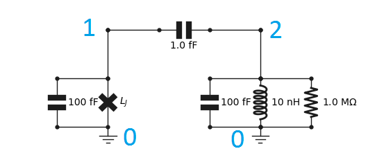

[5]:
import numpy as np
import matplotlib.pyplot as plt
Basics
In this example we study a typical circuit QED system consisting of a transmon qubit coupled to a resonator. The first step is to import the objects we will be needing from qucat.
[6]:
from qucat import Network,GUI,L,J,C,R
One should then create a circuit. These are named Qcircuit, short for “Quantum circuit”. There are two ways of creating a Qcircuit: using the graphical user interface (GUI), or programmatically.
Building the circuit programmatically
This is done with circuit components created with the functions R, L, C, J for resistors, inductors, capacitors and junctions respectively. All circuit components take as first two argument integers referring to the negative and positive node of the circuit components. The third argument is either a float giving the component a value, and/or a string which labels the component parameter to be specified later. Doing the latter avoids performing the computationally expensive
initialization of the circuit multiple times when sweeping a parameter.
For example, this code creates a resistor, with negative node 0, and positive node 1, with a resistance we label R_1, and a resistance value of 1 M\(\Omega\):
[3]:
resistor = R(0,1,1e6,'R_1')
To create a Qcircuit, we should pass a list of such components to the qucat function Network. The following code
[4]:
cir_prog = Network([
C(0,1,100e-15), # transmon
J(0,1,'Lj'),
C(0,2,100e-15), # resonator
L(0,2,10e-9),
C(1,2,1e-15), # coupling capacitor
C(2,3,0.5e-15), # ext. coupl. cap.
R(3,0,50)]) # 50 Ohm load
implements the circuit below, where we have indexed the nodes.

Since we have not specified a value for \(L_j\), we have to specify it as a keyword in all subsequent functions. This is the most computationally efficient way to perform a parameter sweep.
By default, junctions are parametrized by their Josephson inductance \(L_j = \phi_0^2/E_j\) where \(\phi_0 = \hbar/2e\) is the reduced flux quantum, \(\hbar\) Plancks reduced constant and \(e\) the electron charge. and \(E_j\) (in Joules) is the Josephson energy.
Building a circuit with the GUI
Alternatively, we can open the GUI to create the circuit through the following code:
[7]:
cir = GUI('circuits/basics.txt', # location of the circuit file
edit=True, # open the GUI to edit the circuit
plot=True, # plot the circuit after having edited it
print_network=True # print the network
)
C 1 2 C_c=1 fF
C 0 1 100 fF
J 0 1 Lj
C 0 2 100 fF
L 0 2 10 nH
R 0 2 1 MOhm
All changes made to the circuit are saved automatically to the file circuits/basics.txt and when we shut down the editor, the variable cir became a Qcircuit object, from which further analysis is possible.
Note: by default the junction is parametrized by its josephson inductance
Since we have not specified a value for \(L_j\), we have to specify it as a keyword in all subsequent functions. This is the most computationally efficient way to perform a parameter sweep.
Hamiltonian, and further analysis with QuTiP
Generating a Hamiltonian
The Hamiltonian of the circuit, with the non-linearity of the Josephson junctions Taylor-expanded, is given by
\(\hat{H} = \sum_{m\in\text{modes}} \hbar \omega_m\hat{a}_m^\dagger\hat{a}_m +\sum_j\sum_{2n\le\text{taylor}}E_j\frac{(-1)^{n+1}}{(2n)!}\left(\frac{\phi_{zpf,m,j}}{\phi_0}(\hat{a}_m^\dagger+\hat{a}_m)\right)^{2n}\)
See our technical paper for more details: https://arxiv.org/pdf/1908.10342.pdf
In its construction, we have the freedom to choose the set of modes to include, the order of the Taylor expansion of the junction potential taylor, and the number of excitations of each mode to consider.
The code below generates a Hamiltonian and calculates its eigenenergies
[6]:
# Compute hamiltonian (for h=1, so all energies are expressed in frequency units, not angular)
H = cir.hamiltonian(
modes = [0,1],# Include modes 0 and 1
taylor = 4,# Taylor the Josephson potential to the power 4
excitations = [8,10],# Consider 8 excitations in mode 0, 10 for mode 1
Lj = 8e-9)# set any component values that were not fixed when building the circuit
# QuTiP method which return the eigenergies of the system
ee = H.eigenenergies()
The first transition of the system is
[7]:
first_transition = ee[1]-ee[0] # in units of Hertz
# print this frequency in GHz units
print("%.3f GHz"%((first_transition)/1e9))
5.006 GHz
Open-system dynamics
A more elaborate use of QuTiP would be to compute the dynamics (for example with qutip.mesolve). The Hamiltonian H and collapse operators c_ops that one should use are generated with the code below:
[8]:
# H is the Hamiltonian
H,a_m_list = cir.hamiltonian(modes = [0,1],taylor = 4,excitations = [5,5], Lj = 8e-9,
return_ops = True) # with this, we return the annihilation operators of
# the different modes in addition to the Hamiltonian
# The Hamiltonian should be in angular frequencies for time-dependant simulations
H = 2.*np.pi*H
k = cir.loss_rates(Lj = 8e-9) # Calculate loss rates of the different modes
# c_ops are the collapse operators
# which should be in angular frequencies for time-dependant simulations
c_ops = [np.sqrt(2*np.pi*k[0])*a_m_list[0],np.sqrt(2*np.pi*k[1])*a_m_list[1]]
Calculating eigenfrequencies, loss-rates, anharmonicities and cross-Kerr couplings
QuCAT can also return the parameters of the (already diagonal) Hamiltonian in first-order perturbation theory
\(\hat{H} = \sum_m\sum_{n\ne m} (\hbar\omega_m-A_m-\frac{\chi_{mn}}{2})\hat{a}_m^\dagger\hat{a}_m -\frac{A_m}{2}\hat{a}_m^\dagger\hat{a}_m^\dagger\hat{a}_m\hat{a}_m -\chi_{mn}\hat{a}_m^\dagger\hat{a}_m\hat{a}_n^\dagger\hat{a}_n\)
valid for weak anharmonicity \(\chi_{mn},A_m\ll \omega_m\).
Here
\(\omega_m\) are the frequencies of the normal modes of the circuit where all junctions have been replaced with inductors characterized by their Josephson inductance
\(A_m\) is the anharmonicity of mode \(m\), the difference in frequency of the first two transitions of the mode
\(\chi_{mn}\) is the shift in mode \(m\) that incurs if an excitation is created in mode \(n\)
See our technical paper for more details: https://arxiv.org/pdf/1908.10342.pdf
These parameters, together with the loss rate of the modes, are calculated with the functions eigenfrequencies, loss_rates, anharmonicities and kerr, which return the specified quantities for each mode in units of Hertz, ordered with increasing mode frequency
Eigen-frequencies
[9]:
cir.eigenfrequencies(Lj=8e-9)
[9]:
array([5.00696407e+09, 5.60042136e+09])
This will return a list of the normal modes of the circuit, we can see they are seperated in frequency by 600 MHz, but we still do not which corresponds to the transmon, and which to the resonator.
To distinquish the two, we can calculate the anharmonicities of each mode.
Anharmonicity
[10]:
cir.anharmonicities(Lj=8e-9)
[10]:
array([5.82660683e+02, 1.91131054e+08])
The first (lowest frequency) mode, has a very small anharmonicity, whilst the second, has an anharmonicity of 191 MHz. The highest frequency mode thus corresponds to the transmon.
Cross-Kerr or dispersive shift
In this regime of far detuning in frequency, the two modes will interact through a cross-Kerr or dispersive shift, which quantifies the amount by which one mode will shift if frequency if the other is populated with an excitation.
We can access this by calculating the Kerr parameters K. In this two dimensional array, the components K[i,j] correspond to the cross-Kerr interaction of mode i with mode j.
[11]:
K = cir.kerr(Lj=8e-9)
print("%.2f kHz"%(K[0,1]/1e3))
667.43 kHz
From the above, we have found that the cross-Kerr interaction between these two modes is of about 667 kHz.
This should correspond to \(2\sqrt{A_0A_1}\) where \(A_i\) is the anharmonicity of mode \(i\). Let’s check that:
[12]:
A = cir.anharmonicities(Lj=8e-9)
print("%.2f kHz"%(2*np.sqrt(A[0]*A[1])/1e3))
667.43 kHz
Loss rates
In the studied circuit, the only resistor is located in the resonator. We would thus expect the resonator to be more lossy than the transmon.
[13]:
cir.loss_rates(Lj=8e-9)
[13]:
array([1572104.84520218, 3841.15992345])
All these quantities are always ordered with increasing mode frequency, so the second element of the array corresponds to the loss rate of the transmon mode.
\(T_1\) times
When converting these rates to \(T_1\) times, one should not forget the \(2\pi\) in the conversion
[14]:
T_1 = 1/cir.loss_rates(Lj=8e-9)/2/np.pi
print(T_1)
[1.0123685e-07 4.1434084e-05]
All these relevant parameters (frequency, dissipation, anharmonicity and Kerr parameters) can be returned in this order using a single function
[16]:
cir.f_k_A_chi(Lj = 8e-9)
[16]:
(array([5.00696407e+09, 5.60042136e+09]),
array([1572104.84520218, 3841.15992345]),
array([5.82660683e+02, 1.91131054e+08]),
array([[5.82660683e+02, 6.67426551e+05],
[6.67426551e+05, 1.91131054e+08]]))
Using the option pretty_print = True a more readable summary can be printed
[17]:
f,k,A,chi = cir.f_k_A_chi(pretty_print=True,Lj = 8e-9)
mode | freq. | diss. | anha. |
0 | 5.01 GHz | 1.57 MHz | 583 Hz |
1 | 5.6 GHz | 3.84 kHz | 191 MHz |
Kerr coefficients (diagonal = Kerr, off-diagonal = cross-Kerr)
mode | 0 | 1 |
0 | 583 Hz | |
1 | 667 kHz | 191 MHz |
Sweeping a parameter
The most computationally expensive part of the analysis is performed upon initializing the circuit. To avoid doing this, we can enter a symbolic value for a component.
In this example, we have provided a label Lj for the Josephson inductance. Its value has been passed as a keyword argument all function calls (Lj=8e-9) but we can also specify an array of values as done below.
[18]:
# array of values for the josephson inductance
Lj_list = np.linspace(8e-9,12e-9,101)
# Eigen-frequencies of the system:
freqs = cir.eigenfrequencies(Lj=Lj_list)
# plot first mode
plt.plot(Lj_list*1e9,freqs[0]/1e9)
# plot second mode
plt.plot(Lj_list*1e9,freqs[1]/1e9)
# Add labels
plt.xlabel('L_J (nH)')
plt.ylabel('Normal mode frequency (GHz)')
# show the figure
plt.show()
C:\Anaconda3\lib\site-packages\numpy\core\numeric.py:538: ComplexWarning: Casting complex values to real discards the imaginary part
return array(a, dtype, copy=False, order=order)
Visualizing a normal mode
A better physical understanding of the circuit can be obtained by visualizing the flow of current through the circuit components for a given normal mode.
This is done through the show_normal_mode function as shown below.
[19]:
cir.show_normal_mode(mode=0,quantity='current', Lj = 10e-9)
cir.show_normal_mode(mode=1,quantity='current', Lj = 10e-9)
The annotation corresponds to the complex amplitude, or phasor, of current across the component, if the mode was populated with a single photon amplitude coherent state. The absolute value of this annotation thus corresponds to the contribution of a mode to the zero-point fluctuations of the given quantity across the component. The direction of the arrows indicates what direction we take for 0 phase for that component.
We see above that the symmetry on each side of the coupling capacitor is changing between the modes, the above is called the anti-symmetric mode, with a voltage build-up on either side of the coupling capacitor leading to a larger current going through it. Mode 1 is the anti-symmetric mode.
Through the keyword quantity, one can alternatively plot voltage, flux, or charge.
The values in these annotations can also be accessed programmatically:
[20]:
print(cir.components['C_c'].zpf(mode = 0, quantity = 'current',Lj = 10e-9))
(1.7816247236867328e-10-1.4226021802836471e-12j)